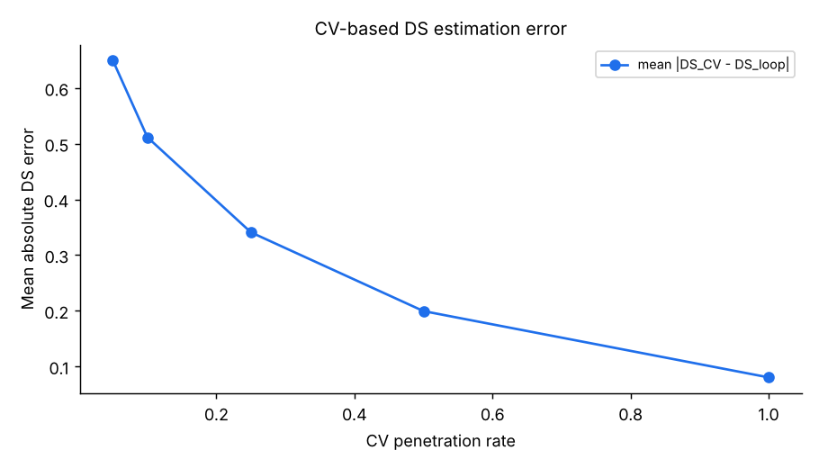
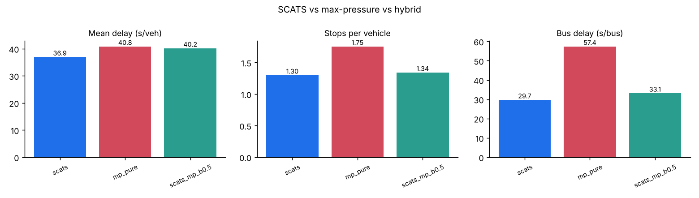
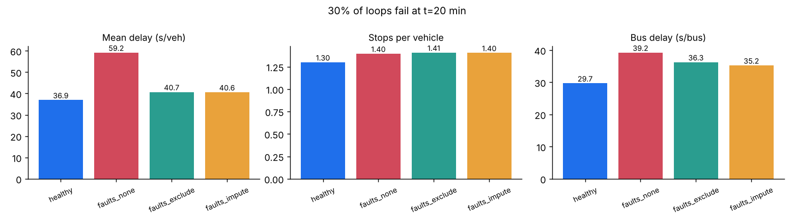

Research directions, implemented
Five open questions about where adaptive control like SCATS is heading. Each comes with a working implementation on top of the lab's SUMO controller, the result it produced, and concrete ways to push it further. Several first attempts do not beat standard SCATS; that is the honest starting line for a thesis or paper.
Study guide and slides
Step through the slides or read the beginner study guide right here. Change slides with the arrow keys, the buttons, or a swipe; open full screen for teaching. Both can also be downloaded.
How to evaluate a new SCATS idea
- Change one thing. Every implementation here swaps one SCATS component through a hook in
ControllerConfig(ds_source,split_selector,green_allocator,sensor_filter) and keeps everything else as standard SCATS. - Compare against three baselines: fixed time, actuated and standard SCATS, on identical demand and seeds.
- Use several seeds. Demand is stochastic; report the mean and the spread, not your best run.
- Report more than delay: stops, bus delay and queue tell different stories, and a new method can trade one for another.
- Ask what would stop deployment: safety envelope, explainability, data availability and robustness to bad sensors.
python run_all.py mastery # all five studies, about 6 minutes
python tools/export_site_results.py # refresh the numbers on this page1. Degree of saturation from connected vehicles
Can SCATS run on probe or connected-vehicle (CV) data instead of loops, and what penetration is needed?
Loops are expensive to install and maintain and fail often. Vehicles that report their trajectories could replace them, but only a fraction p of vehicles report. The simplest estimator scales the CV count and converts it to the green a saturated stream would need:
Sampling noise in CV-based DS
2,000 simulated greens, each with the same true traffic- Implementation
mastery/01_cv_ds_estimation.py, estimator inLaneMeter.finish()(ds_source="cv")- Part A
- Shadow mode: on the same SUMO traffic, compare CV-based DS with loop DS for 2,122 lane-cycles.
- Part B
- Closed loop: drive SCATS with the CV estimate.

What we found. Error is large below 25% penetration. In closed loop, mean delay with CV-based DS is 8% to 21% higher than loop-based SCATS, and it does not improve steadily with penetration. Stops and bus delay even fall at low penetration, because a noisy estimate that overshoots tends to lengthen greens. Plan voting absorbs much of the noise, so delay is less sensitive than the raw error suggests.
Take it further. Use where CVs join the back of the queue (shockwave theory) to see demand that has not yet crossed the stop line; fuse loops and CVs with a Kalman filter; estimate the penetration rate itself; test under spill-back, where stop-line counts mislead.
2. Learning split selection inside the SCATS envelope
Can a reinforcement-learning agent choose split plans better than DS equalisation, while everything else stays SCATS?
Deep RL signal control often reports large gains in simulation but is rarely deployed: it is hard to certify, to explain and to keep safe. Restricting the agent to choosing among engineer-approved split plans keeps minimum greens, intergreens and coordination intact. The lab agent is tabular Q-learning, one table shared by the four intersections.
Train an agent in your browser
Simplified two-phase queue model, 60 s cycle, demand that swings between the phases- Implementation
mastery/02_rl_split_selection.py(split_selectorhook). Trains 12 episodes on varied seeds, evaluates greedily on three unseen seeds of the full 90-minute corridor.
What we found. In the toy model the agent learns to match or beat the DS rule. On the SUMO corridor, after only 12 short episodes, it is about 4 s per vehicle worse than SCATS across three unseen seeds. The state is coarse, the reward is noisy, and SCATS's DS rule is a strong, well-tuned baseline.
Take it further. Add VK and queue to the state; reward pressure or delay instead of halted vehicles; train much longer with experience replay or a small DQN; let the agent tune plan contents within bounds instead of picking among four; use offline RL from logged SCATS data.
3. SCATS × max-pressure
DS measures how well green is used but is blind to the road downstream. Can pressure-based splits make SCATS spill-back aware without losing coordination?
Max-pressure control (Varaiya, 2013) serves the phase with the largest difference between upstream queue and downstream load, and is throughput-optimal under idealised assumptions. Pure max-pressure is acyclic, so green waves are hard. The hybrid keeps SCATS's cycle length and offsets and blends greens:
Pressure versus DS split
Two phases, 70 s of green to share. Phase A's exit is filling up.| Rule | Green A | Green B |
|---|
The DS split here assumes phase A used its last green fully (DS 0.95) and B moderately (DS 0.6). Raise A's downstream load and watch pressure pull green away from a movement that has nowhere to go.
- Implementation
mastery/03_maxpressure_hybrid.py:MaxPressureController(pure, acyclic) and thegreen_allocatorhook for the hybrid.

Take it further. Test where max-pressure should shine: a grid with spill-back and turning conflicts. Tune β by DS (use pressure only when downstream occupancy is high); use pressure for phase skipping decisions; add a perimeter-control layer using the network's macroscopic fundamental diagram.
4. Resilience to detector faults
Real networks always have faulty loops. How much performance is lost, and which fault handling recovers it?
A stuck-off loop never sees a vehicle: the controller sees permanent gaps, gaps out at minimum green and reads DS near zero. A stuck-on loop is permanently occupied: no gaps, so the phase runs to its maximum and DS looks saturated. Both mislead the strategic layer, which then sets wrong cycles and splits for the whole subsystem.
What a faulty loop reports
One 30 s green with 12 vehicles, two loops on the phase- Implementation
mastery/04_detector_faults.py: 30% of loops fail at minute 20 (half stuck-off, half stuck-on). Alarms inLaneMeter.finish(): no counts for 6 greens, or near-100% occupancy for 2 greens.

Take it further. Detect subtler faults (sensitivity drift, crosstalk between adjacent loops); impute spatially from neighbouring lanes and upstream intersections; use CV data as the fallback source; quantify how many faults SCATS tolerates before Flexilink fallback would be better.
5. Predicting signal timing for connected vehicles
Green-light speed advice, eco-driving and automated vehicles need to know when the current green will end. How predictable is an adaptive controller?
Fixed-time signals publish exact Signal Phase and Timing (SPaT). SCATS re-plans every cycle and can gap out or skip phases, so time-to-change is uncertain. The lab logs every green on the corridor and tests three predictors made at the moment the green starts.
- Implementation
mastery/05_spat_prediction.py: planned allocation, persistence (last cycle's green), and a linear regression trained on the first half of the run.
What we found. The controller's own plan is the best of the three, with a mean error of about 2.6 s; naive learning from history does worse. The useful research is in what a plan cannot know: real-time gap-out and priority calls.
Take it further. Update the prediction every second using live gap timers; predict a distribution and publish a confidence band; measure the fuel benefit of speed advice with and without prediction error in SUMO.
More directions worth a project
- Pedestrians and cyclists: DS-like utilisation measures for walk phases; double cycling and "walk with green" trade-offs.
- Multimodal priority: conditional bus priority by lateness or occupancy, and its cost to cross traffic.
- Network-level control: perimeter (gating) control on top of SCATS subsystems using the macroscopic fundamental diagram.
- Digital twins: calibrate a SUMO model continuously from SCATS detector logs and test plan changes before deploying them.
- Data-driven plan libraries: cluster historical traffic states to design split and offset plans automatically.
- Equity and emissions: objectives beyond vehicle delay, such as person delay and NOx near schools.
Reading list
- Sims, A. G., & Dobinson, K. W. (1980). The Sydney coordinated adaptive traffic (SCAT) system: philosophy and benefits. IEEE Transactions on Vehicular Technology, 29(2).
- Lowrie, P. R. (1982). The Sydney coordinated adaptive traffic system: principles, methodology, algorithms. IEE International Conference on Road Traffic Signalling, London.
- Varaiya, P. (2013). Max pressure control of a network of signalized intersections. Transportation Research Part C, 36.
- Wei, H., Zheng, G., Gayah, V., & Li, Z. (2019). A survey on traffic signal control methods. arXiv:1904.08117. Includes the DS and split-selection formulation used here.
- Lopez, P. A., et al. (2018). Microscopic traffic simulation using SUMO. IEEE Intelligent Transportation Systems Conference (ITSC).